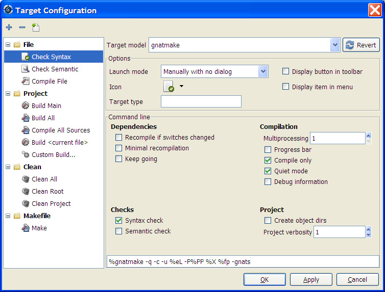

This chapter describes how to compile files, build executables and run them. Most capabilities can be accessed through the Build menu item, or through the Build and Run contextual menu items, as described in the following section.
When compiler messages are detected by GPS, an entry is added in the Locations View, allowing you to easily navigate through the compiler messages (see The Locations View), or even to automatically correct some errors or warnings (see Code Fixing).
Compiler messages also appear as icons on the side of lines in the source editors. When the mouse pointer is left on these icons, a tooltip appears, listing the error messages found on this line. When GPS is capable of automatically correcting the errors, clicking on the icon will apply the fix to the source code. The icons on the side of editors are removed when the corresponding entries are removed from The Locations View.
GPS provides an interface for launching operations like building projects, compiling individual files, performing syntax or semantic checks, and so on. All these operations have in common that they involve launching an external command, and parsing the output for error messages. In GPS, these operations are called “Targets”, and can be configured either through the Target Configuration dialog, or through XML configuration. Customizing build Targets and Models.
This dialog is divided in two areas: on the left, a tree listing Targets, and, in the main area, a panel for configuring the Target which is currently selected in the tree.
The Tree contains a list of targets, organized by categories.
On top of the tree are three buttons:
On top of the configuration panel, one can select the Target model. The Model determines the graphical options available in the “Command line” frame.
The “Revert” button resets all target settings to their original value.
The “Options” frame contains a number of options that are available for all Targets.
The “Display” frame indicates where the launcher for this target should be visible.
The “Command line” contains a graphical interface for some configurable elements of the Target, which are specific to the Model of this Target.
The full command line is displayed at the bottom. Note that it may contain Macro Arguments. For instance if the command line contains the string “%PP”, GPS will expand this to the full path to the current project. For a full list of available Macros, see Macro arguments.
GPS is capable of launching compilation targets in the background. This means that GPS will launch the compiler on the current state of the file in the editor.
Error messages resulting from background compilations are not listed in the Locations view or the Messages window. The full messages are listed in the Background Build console, accessible from the menu Tools->Console. Error messages which contain a source location indication are shown as icons on the side of lines in editors, and the exact location is highlighted directly in the editor. On both of these places, tooltips show the contents of the error messages.
Messages from background compilations are removed automatically either when a new background compilation has finished, or when a non-background compilation is launched.
GPS will launch background compilations for all targets that have a Launch mode set to In background, after modifications occur in a source editor. Background compilation is useful mostly for targets such as Compile File or Check Syntax. For targets that work on Mains, the last main that was used in a non-background is considered, defaulting to the first main defined in the project hierarchy.
Background compilations are not launched while GPS is already listing results from non-background compilations, ie as long as there are entries in the Locations View showing entries in the Builder results category.
GPS provides an easy way to build your project with different options, through the Mode selection, located in the main toolbar.
When the Mode selection is set to default, the build is done using the switches defined in the project. When the Mode selection is set to another value, then specialized parameters are passed to the builder. For instance, the gcov Mode adds all the compilation parameters needed to instrument the produced objects and executables to work with the gcov tool.
In addition to changing the build parameters, the Mode selection has the effect of changing the output directory for objects and executables. For instance, objects produced under the debug mode will be located in the debug subdirectories of the object directories defined by the project. This allows switching from one Mode to another without having to erase the objects pertaining to a different Mode.
It is possible to define new Modes using XML customization, see Customizing build Targets and Models.
Note that the Build Mode affects only builds done using recent versions of gnatmake and gprbuild. The Mode selection has no effect on builds done through Targets that launch other builders.
This functionality is intended for people whose projects need to be compiled with a specific (old) version of the GNAT toolchain, while still desiring to take full advantage of up-to-date associated tools for non-compilation actions, such as checking the code against a coding standard, getting better cross-reference browsing in GPS, computing metrics and so on.
GPS now allows you to handle this case. To configure GPS to make it handle two compiler toolchains, you need to use the Build->Settings->Toolchains menu. This will open a dialog where you can activate the multiple-toolchains mode.

In this dialog, two paths need to be configured: the compiler path and the tools path. The first one is used to actually compile the code, while the second one is used to run up-to-date tools to get more functionalities or accurate results.
Note that GPS will only enable the OK button when the two paths are set to different location, since otherwise it does not make sense to enable the multiple toolchains set up.
From this dialog, you can also activate an automated cross-reference generation. The cross-reference files are the .ali files generated by the GNAT compiler together with the compiled object. Those files are used by GPS for several functionalities, such as cross-reference browsing or documentation generation. Having those .ali files produced by a recent compiler helps having more accurate results with those functionalities, but might interract badly with an old compiler also reading those .ali files for compiling a project.
If the automated xref generation is activated, then GPS will generate those .ali files using the compiler found in the tools path, and place them in a directory distinct from the one used by the actual compiler. This allows GPS to take full benefit of up-to-date cross-reference files, while keeping the old toolchain happy as its .ali files remain untouched.
Note that the cross-reference files generation does not output anything in the “Messages” window, so as to not confuse the output of the regular build process. If needed, you can see the output of the cross-ref generation command by selecting the Tools->Consoles->Auxiliary Builds menu.
The ability to work with two compilers has impacts on the remote mode configuration: paths defined here are local paths, so they have no meaning on the server side.
To handle the case of using a specific compiler version on the remote side while still wanting up-to-date tools, the following behavior is applied when both a remote compilation server is defined, and the multiple toolchains mode is activated: